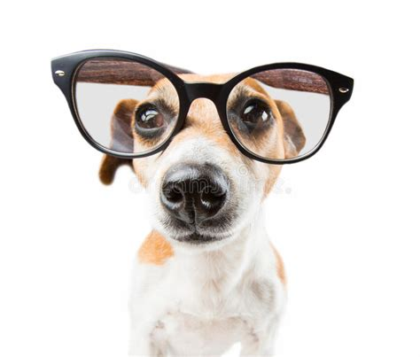
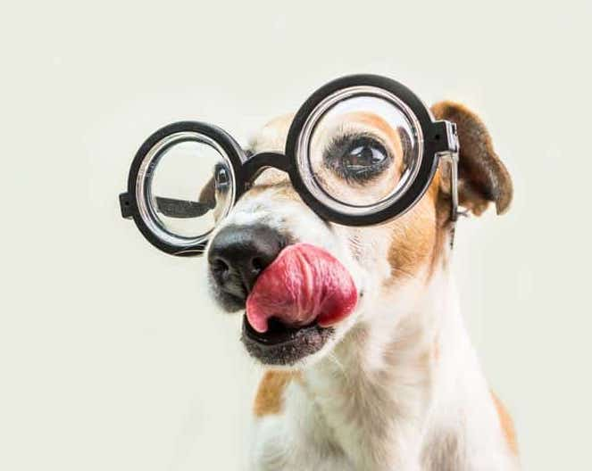
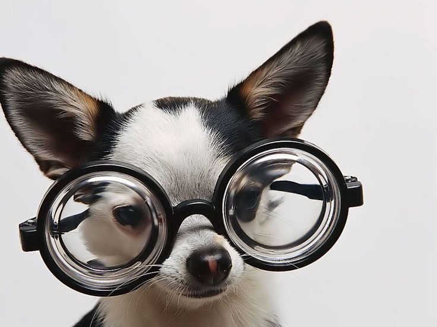

-

Video Store API
API created to handle the backend of a video store site. In this project I created conventional RESTful CRUD routes for two models (Customers and Videos). Created a many-to-many relationship between these models, and performed smoke testing to exercise all the endpoints in Postman. The database for this API was deployed to Heroku. You can checkit out here.
Tech: Python, Flask, SQLAlchemy, Postman, Heroku. -
Task List API
API created to organize tasks. In this project I created conventional RESTful CRUD routes for two models (Task and Goal), a one-to-many relationship between these models, and called another API (Slack API) inside my API. Tasks can be marked as complete, incomplete, organized by goals and can recieve notifications about any task update in Slack. The database was deployed to Heroku in this link.
Tech: Python, Flask, SQLAlchemy, Postman, Pytest, Heroku. -

Swap Meet
In this project I created several classes (Vendor, Item, Clothing, Decor, Electronics) with different attributes, instance methods and applying inheritance for a deeper understanding of OOP. Vendors are able to swap their top items and swap items by category.
Tech: Python, Pytest, OOP. -

Typing Speed Test
After taking the learning path Become a Software Developer, I created this website to apply my self-learning knowledge of HTML, CSS and JavaScript. The goal is to duplicate the provided tex, exactly. The site notifies if there is an error, if the text has been typed successfully and the time taken to complete.
Tech: HTML, CSS, JavaScript. -

Tamagotchi
After taking the learning path Become a Software Developer, I created this project to apply my self-learning knowledge of C# and Object Oriented Programming. This project has a CLI to interact. A Tamagotchi can eat, play and sleep. The user can decide which activity wants to do. The Tamagotchi will let the user know if it needs to eat more in order to be able to play and live healthy.
Tech: C#, OOP.